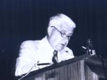

-
George Basalla nacido en 1928 es un estadounidense que completó sus estudios en 1963 titulándose de History of Science en la universidad de Harvard. Luego de ser profesor asistente en la Universidad de Texas en 1964 y profesor en la Universidad de Delaware en 1971, se jubila en 1999 para volverse un profesor emérito.
Él ha colaborado en múltiples textos sobre ciencia y tecnología, tales como; Science and the Enlightenment y Man and Nature in the Renaissance. El último libro que se ha publicado bajo la autoría de George Basalla es Civilized Life in the Universe: Scientists on Intelligent Extraterrestrials, en el 2006.